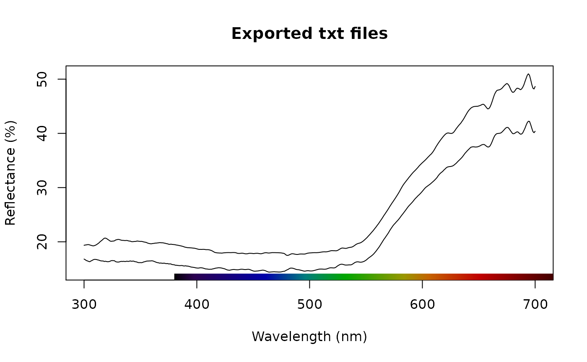

This vignette has two goals:
- demonstrate that
lightrparsers produce the same output as the official software - show an example of analysis you can run once you’ve imported your data with
lightr
For this, we use spectral data of the beak of the atlantic puffin, Fratercula arctica. This data was collected by Dr Claire Doutrelant, using an OceanOptics spectrometer.
knitr::include_graphics("puffin-small.jpg")Atlantic puffin close up, by user john-289283 from pexels.com
Comparison of outputs
By default, OceanInsight spectrometers produce .ProcSpec files, which R cannot readily import. To help with this, OceanInsight official software, SpectraSuite has a conversion feature, which turns .ProcSpec files into tab separated values files (.txt).
So, let’s start by comparing the .ProcSpec spectra imported by lightr and the .txt files produced by OceanOptics.
raw_files <- lr_get_spec(file.path("data", "puffin"), ext = "ProcSpec")
#> 2 files found; importing spectra:
txt_files <- lr_get_spec(file.path("data", "puffin"), ext = "txt")
#> 2 files found; importing spectra:We can visually inspect these two file using the dedicated S3 function pavo::plot.rspec():
library(pavo)
plot(raw_files, main = "Raw ProSpec files")
plot(txt_files, main = "Exported txt files")
Spectra imported by lightr and converted by SpectraSuite look pretty similar upon visual inspection and we can confirm this with
all.equal(raw_files, txt_files, tol = 1e-4)
#> [1] TRUEExample of analysis
One possibly biologically relevant question would be to look at the interspecific variability in beak colour. I.e., do all puffin individuals have roughly the same colour or are some individuals brighter, more colourful than others?
For this, we will look at the difference in hue and brightness on the red part of the beak for two individuals, with pavo::summary.rspec() function (after smoothing with pavo::procspec()):
beak <- procspec(raw_files, opt = "smooth")
#> processing options applied:
#> smoothing spectra with a span of 0.25
summary(beak, subset = c("B2", "H5"))
#> B2 H5
#> BR_PF26_1 26.23823 569
#> BR_PF27_3 21.78785 581Okay, these two individuals seem to differ quite a lot in terms of hue and brightness. Now, one might ask if these difference can be perceived in bird vision. We can test this with the pavo::coldist() function.
vis_beak <- vismodel(beak, visual = "avg.uv", achromatic = "ch.dc")
tcs_beak <- colspace(vis_beak)
coldist(tcs_beak, achromatic = TRUE)
#> Quantum catch are relative, distances may not be meaningful
#> Calculating unweighted Euclidean distances and Weber luminance contrast
#> patch1 patch2 dS dL
#> 1 BR_PF26_1 BR_PF27_3 0.005867583 0.2004935The values of dS and dL are below the 1 JND (just noticeable differences) threshold, which means that the colour of the two individuals, in spite of their difference, looks the same to the birds.